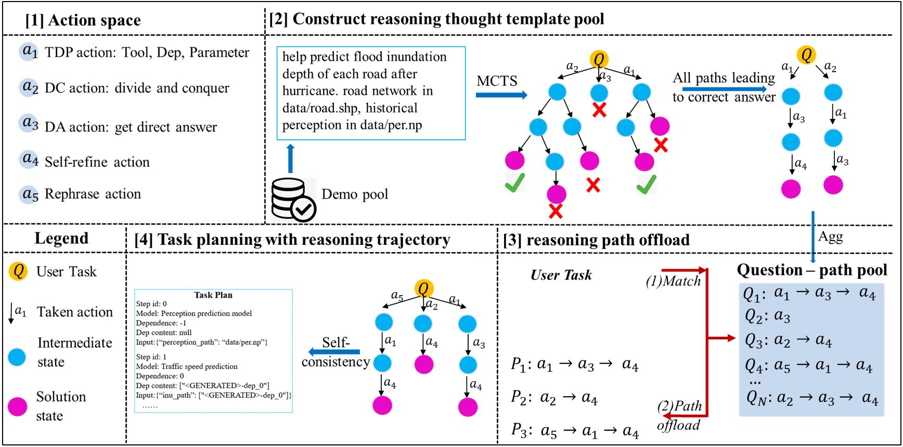
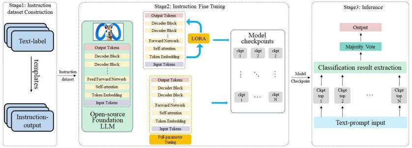

About Me
Hello! I am a Ph.D. student in Computer Science at Texas A&M University (TAMU), advised by Prof. James Caverlee and Prof. Ali Mostafavi.
My research lies at the intersection of Information Retrieval and large language models, with a focus on building robust retrieval systems for data-scarce domains and developing LLM-powered multi-agent systems for complex task solving, including task planning and tool use.
My recent work includes DMRetriever, a family of dense retrieval models achieving state-of-the-art performance across 48 retrieval tasks (ACL 2026 Main), and DisastIR, the first comprehensive IR benchmark for disaster management (EMNLP 2025 Findings).
I am open to research collaboration and internship opportunities. Feel free to reach me at kai_yin@tamu.edu.
🔥 News
-
2026.04
🎉🎉 DMRetriever is accepted by ACL 2026 Main!

-
2026.04
🎉🎉 DisastQA is accepted by ACL 2026 Findings!
-
2025.11
🚀 Released source code and model checkpoints for DMRetriever (33M–7.6B).
-
2025.08
🎉🎉 DisastIR is accepted by EMNLP 2025 Findings!
-
2025.08
🚀 Released source code and dataset for DisastIR.
📝 Selected Publications and Projects

DMRetriever: Difficulty-aware Progressive Fine-tuning LLM for Improved Textual Retrieval in Data-Scarce Domain
ACL 2026 Main | May. 2025 – Sept. 2025
- Developed DMRetriever, a family of six dense retrieval models (33M–7.6B) from encoder (BERT)- and decoder (Qwen)-only backbones, achieving SOTA across 48 retrieval tasks at all scales with exceptional parameter efficiency.
- Proposed difficulty-aware progressive instruction supervised fine-tuning to ensure models at different scales learn effectively.
- Introduced an advanced data refinement method, including domain-specific data synthesis, mutual-agreement-based false positive filtering, and difficulty-aware hard negative mining.
- Proposed multi-teacher knowledge distillation to further improve small-sized model performance and achieve parameter-efficiency for on-device model implementation.
- Introduced a light-weight IR validation set, enabling over 30× faster model development while maintaining reliable performance rankings.

DisastIR: Automatic Information Retrieval Benchmark Construction for Data-Scarce Domain
EMNLP 2025 Findings | Jan. 2025 – May. 2025
- Developed DisastIR, a comprehensive IR benchmark covering 48 distinct retrieval tasks with over 1.3M automatically labeled query-passage pairs for a data-scarce domain.
- Developed a four-stage automatic query-passage relevance labeling framework which fully replaces human labeling, ensures zero "hole" rate for model evaluation and achieves significant consistency for model performance ranking with human annotations.
- Benchmarked 30 retrieval models (33M–7B) under exact and ANN search, guiding model selection.

DisastQA: A Comprehensive Benchmark for Question Answering Evaluation in Disaster Management
ACL 2026 Findings | Co-first author | May. 2025 – Sep. 2025
- Developed DisastQA, a QA benchmark covering both multiple choice and open-ended question types with 3,000 QA pairs based on DisastIR.
- Proposed a Human-LLM collaborative pipeline for efficient benchmark development with key point extraction for open-ended questions, ensuring verifiable evaluation.
- Evaluated 18 LLMs considering different upstream retrieval performances under no relevant passage (base), only relevant passage (golden), and mixture (mix) settings.

Disaster-Agent: LLM-based Multi-agent System for Complex Disaster Management Task Solving
Sep. 2024 – Jan. 2025
- Proposed E_MCTS_TP (Efficient Monte Carlo Tree Search for Task Planning) at test time to improve task planning ability and efficiency of small language models (SLM) in multi-agent systems.
- Developed DisasterTool through LLM-in-loop domain-specific agent discovery pipeline, reducing human workloads by 98.9%.
- Introduced DisasterTask benchmark including user tasks in different complexities through random sampling tool and data graph and self-instruct LLM in node, chain, and directed acyclic graph levels.

CrisisSense-LLM: Instruction Fine-Tuning LLM for Multi-task Social Media Text Processing in Disaster Informatics
arXiv:2406.15477 | Jan. 2024 – Jun. 2024
- Designed fine-tuning prompt for multi-task tuning (text classification and named entity recognition) in multi-turn conversation format to instruction fine-tune Llama3.1-8B in LoRA and full-parameter tuning settings.
- Searched for hyperparameter combinations of LoRA to achieve 96.7% performance of full-parameter tuning, achieving best overall accuracy of 87.2%.
- Fine-tuned with data-parallel mixed-precision using DeepSpeed ZeRO-Stage-3, reducing GPU time by 35%.
📄 Other Publications
-
R2RAG-Flood: A Reasoning-Reinforced Training-Free Retrieval Augmentation Generation Framework for Flood Damage Nowcasting.
Lipai Huang, Kai Yin, Chia-Fu Liu, Ali Mostafavi (2026). (Corresponding author, Under review, Computer-Aided Civil and Infrastructure Engineering)
-
CrisiSense-RAG: Crisis Sensing Multimodal Retrieval-Augmented Generation for Rapid Disaster Impact Assessment.
Yiming Xiao, Kai Yin, Ali Mostafavi (2026). (Under review, Computer-Aided Civil and Infrastructure Engineering)
-
FloodSQL-Bench: A Retrieval-Augmented Benchmark for Geospatially-Grounded Text-to-SQL.
Hanzhou Liu, Kai Yin, Ali Mostafavi, & James Caverlee (2025).
-
Disaster Management in the Era of Agentic AI Systems: A Vision for Collective Human-Machine Intelligence for Augmented Resilience.
Bo Li, Junwei Ma, Kai Yin, Yiming Xiao, Chia-Wei Hsu, Ali Mostafavi (2025).
-
Automated Wildfire Damage Assessment from Multi-View Ground Level Imagery via Vision Language Models.
Miguel Esparza, Archit Gupta, Ali Mostafavi, Kai Yin, Yiming Xiao (2025).
-
Deep Learning-driven Community Resilience Rating based on Intertwined Socio-Technical Systems Features.
Kai Yin, Bo Li, Ali Mostafavi (2023). npj Urban Sustainability.
-
Unsupervised graph deep learning reveals emergent flood risk profile of urban areas.
Kai Yin, Ali Mostafavi (2023). (Under review, npj Urban Sustainability) -
An integrated resilience assessment model of urban transportation network: A case study of 40 cities in China.
Kai Yin, Wu, J., Wang, W., Lee, D. H., & Wei, Y. Transportation Research Part A.
📖 Education
-
2022.07 – 2027.05 (exp.)
Texas A&M University, College Station, TX, USA
Ph.D. student in Computer Science -
2019.09 – 2021.06
Beijing Jiaotong University, Beijing, China
M.S. in Traffic and Transportation Engineering
🛠 Skills
🏆 Honors & Awards
- Passed CSE Ph.D. Qualifying Exam with 99th percentile score.
- National Second Prize, 13th National Undergraduate Transportation Science and Technology Competition (First Author).